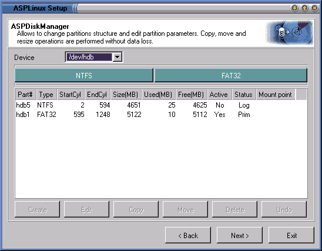
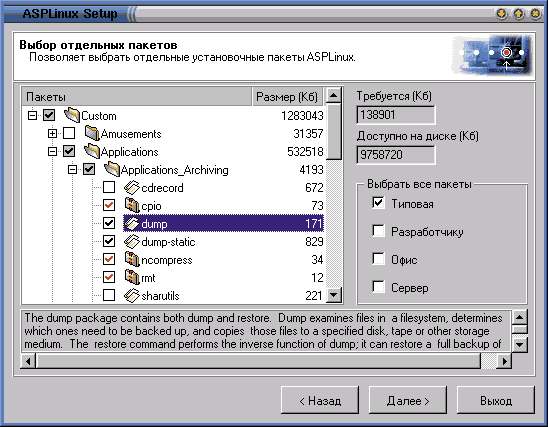
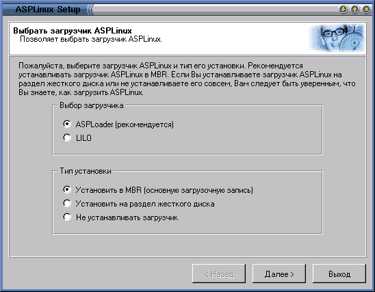
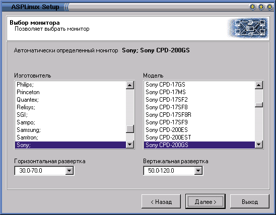
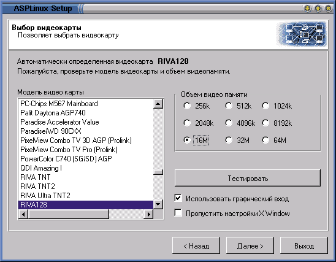
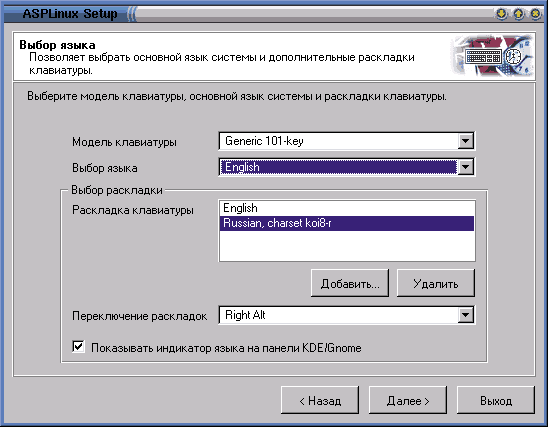

fedorchuk@geo.tv-sign.ru, http://linuxsaga.newmail.ru
В ходе очередной смены машины я начал широкомасштабные изыскания в области новых дистрибутивов ОС Linux. Не то чтобы я был недоволен своим Mandrake 7.0/RE - ничего лучшего для работы я пока не нашел. А просто - когда я поменял в течение пары месяцев три компьютера, мной овладело беспокойство, охота к перемене мест.
Тут-то и настало время ASPLinux, заявленного как первый дистрибутив Linux, целиком сделанный в России. Претензия, конечно, несколько спорная. Во-первых, сомнительно, что файловая система Red Hat (стопроцентная совместимость с которой также декларируется) есть отечественное достижение. А во-вторых, в качестве производителя ASPLinux значится некая фирма SWsoft Pte (http://www.sw-soft.com).
Однако, насколько можно понять, один из разработчиков дистрибутива - Вячеслав Калошин, известный как ведущий Web-сайта http://www.linuxnews.ru, а в числе правообладателей отдельных компонентов обнаруживается фирма PhysTechSoft, разработавшая в свое время собственный клон DOS и оригинальный мультисистемный загрузчик. Все это заставляет поверить если не в целиком, то хотя бы в частично российское происхождение дистрибутива.
Название ASPLinux попадалось мне в Интернете начиная с лета 2000 г. Однако внимания я на него не обращал - из-за вполне понятной ассоциации с Active Server Pages, - пока не увидел этот пакет заявленным для участия в выставке Softool'2000. Там и прочитал о его о русском происхождении и об отсутствии всякой связи с ASP (поскольку аббревиатура ASPLinux расшифровывается как Linux для Application Service Provider).
Получить дистрибутив на тогдашней выставке не удалось, но я благополучно скачал сначала один из последних вариантов - biuld 09192000, а затем и то, что было заявлено как Release Candidat (ASPLinux RC-1). Последовательное знакомство с обоими и дало повод для этой статьи.
ASPLinux снаружи
Итак, ASPLinux ныне имеет статус релиз-кандидата, но вскоре, по сведениям с сайта производителя, должен появиться и настоящий релиз, в том числе в коробочном исполнении. В настоящее время (до выхода коробочной версии) ASPLinux полностью бесплатен и открыт, хотя и распространяется на условиях собственно лицензии ASPLinux PUBLIC LICENSE.
Доступен ASPLinux сегодня в виде ISO-образа CD-ROM на сайте http://www.asplinux.ru, откуда по ссылкам можно выйти на большое количество FTP-серверов, как в России, так и в прочих странах (США, Корея, Сингапур и т.д.). Благодаря наличию таких серверов скачивание происходит очень быстро, несмотря на объем дистрибутива - более 600 Мбайт. Кроме того, предусмотрена установка ASPLinux непосредственно из сети по http-протоколу (метод, именуемый разработчиками Expesso), в том числе и из Windows. Этот вариант я не опробовал.
ASPLinux позиционируется как серверная система, предназначенная для управления разноплатформенными приложениями. При этом наличие варианта установки из-под Windows (как on-line, так и на локальной машине) подчеркивает ориентацию дистрибутива на системных администраторов, только начинающих знакомство с Linux. Впрочем, в анонсе на сайте сказано, что ASPLinux хорошо подходит и для персональных систем.
Проверка последнего утверждения и была целью моего исследования. Для этого я изготовил из скачанного образа загрузочный CD, вставил его в привод и нажал на Reset - чтобы установить его в собственный раздел, в дополнение к имевшимся Windows-разделу (2 Гбайт) и серии Linux-разделов, где у меня стоял Linux Mandrake. Последний располагался в разделах /boot (10 Мбайт), корневом (3 Гбайт), /home (8 Гбайт) и swap (256 Мбайт). Поскольку работа проводилась на винчестере емкостью 15 Гбайт, свободными для экспериментов оставалось почти 2 Гбайт, на которых я и хотел временно поселить ASPLinux.
Установка
Практически сразу после загрузки система переходит в графический режим с симпатичной заставкой. На http://www.asplinux.ru имеется руководство по установке (кстати, очень подробное и понятное, да еще и на хорошем русском языке), которое сопровождается картинками, иллюстрирующими практически каждый шаг установки. Поэтому остановлюсь только на моментах, которые представляются мне наиболее существенными.
Первый этап собственно установки - выбор языка (из английского, русского, корейского, китайского, польского и японского, именно в таком порядке). Он сопровождается английским текстом с описанием достоинств устанавливаемой системы. Имеются две клавиши - "Next" и "Exit", смысл которых понятен.
Выбираю, естественно, русский язык. Сопроводительный текст преобразуется в родную речь, надписи на клавишах также изменяются на "Вперед" и "Выход". Дальше предлагается выбрать мышь (список содержит много конкретных моделей и, естественно, Generic Mouse всякого рода), а затем - тип установки (на этом этапе появляется и третья клавиша - "Назад"). Установка может быть быстрой и выборочной. Естественно, останавливаюсь на выборочной.
Следующий шаг - выбор источника. Это может быть либо CD-ROM (или его образ на жестком диске), либо сеть. Мой выбор, за отсутствием сети, понятен.
Переходим к созданию разделов. Можно создавать разделы:
- на весь диск, с уничтожением существующих разделов и данных на них. Этот пункт несколько опрометчиво, учитывая ориентацию системы, отмечен по умолчанию;
- на всем свободном месте, с сохранением ранее созданного дискового "хозяйства" (и данных);
- дополнительно, т. е. по собственному желанию.
Мое желание понятно - выбираю пункт последний. Грузится программа разбиения на разделы, собственная, ASPDisk Manager. Выглядит она, надо сказать. своеобразно. Имеется выпадающее меню с возможностью выбрать физический диск для разбиения (редкая опция); линейка, показывающая текущее разбиение; текстовый список имеющихся разделов и серия кнопок: "Создать", "Изменить", "Копировать", "Двигать", "Удалить", "Отменить". Активизируются они контекстно, в зависимости от того, выбран ли существующий раздел или свободное неразбитое пространство (рис. 1).
|  |
| Рис. 1. Разбиение диска на разделы в ASPDisk Manager.
|
Комментарий (по-прежнему на русском) сообщает, что можно изменить размер существующего FAT- или NTFS-раздела либо переместить его, не нарушая целостности данных (впрочем, не пробовал, и другим рисковать не советую, если не сделана полная резервная копия).
Создаю разделы. При нажатии кнопки "Создать" появляется предложение ввести размер раздела в мегабайтах, характер (первичный или расширенный), тип файловой системы, точку монтирования и прочие характеристики. Для существующего раздела можно указать необходимость форматирования (по умолчанию - выключено, т. е. при модернизации системы можно сохранить разделы с данными, такие как /home). Интересно, что после ввода желаемого размера нового раздела указывается, сколько осталось свободного дискового пространства, - очень наглядно. Разумеется, никакие изменения не вступают в силу, пока вы не перешли к следующему пункту программы установки.
А следующий пункт - это выбор пакетов. Он выполняется в два шага. Сначала - назначение установки: типовая (747 Мбайт), для разработчика (892 Мбайт), офисная (723 Мбайт), серверная (442 Мбайт, причем, согласно комментарию, без графических сред, т. е. без системы X Window). Далее для любого назначения можно дополнительно отметить выборочность установки.
По обыкновению выбираю установку разработчика (меньше вероятность, что в нужный момент не окажется необходимой для сборки библиотеки), включаю переключатель "Выборочно". Начинается собственно выбор пакетов (рис. 2).
|  |
| Рис. 2. Выбор установочных пакетов ASPLinux.
|
Пакеты собраны в два списка - Optional (внутри которого, собственно, и происходит выбор) и Requires (где все уже выбрано до нас). Опциональный список очень обширен, но детально структурирован. Он включает, во-первых, Amusements - Games (зачеркиваю, не читая) и Amusements - Graphics, где имеются всякого рода скринсейверы, в том числе трехмерные, требующие OpenGL. Во-вторых, в нем имеются Applications в составе:
- Archiving, где в числе архиваторов и упаковщиков имеется cdrecord (интересно, что парная к ней утилита mkisofs для создания iso-образов дисков - в совершенно другом разделе);
- Communications;
- Cryptography;
- Databases (все, имеющее отношение к Postgress; никакого намека на MySQL я не обнаружил);
- Editors (обычный набор из Emacs, Vi, Jed, Joe, gEdit, Gnotepad);
- Engeneering (gnuplot и еще пара программ);
- File (средства управления файлами, среди которых напрасно было бы искать Midnight Commander, он угодил в оболочки);
- Finance;
- Graphics (не самый богатый, но достаточный набор, в который вошел графический редактор GIMP);
- Internet (браузеры, ftp-клиенты и прочее);
- Multimedia (большая подборка Gtk, по преимуществу, приложений);
- Office, представленный только Abisuite, хотя потом, в разделе XFree, выясняется, что есть и KOffice - офисный набор, предлагаемый разработчиками среды KDE.
Затем следуют всякого рода системные средства, X Window и т.д. Перечислять все было бы слишком долго. Отмечу только, что ispell, программа для проверки орфографии, находится в разделе Text, при этом русская версия программы по умолчанию не отмечена.
В целом классификация показалась мне не вполне внятной (чего стоит разнесение cdrecord и mkisofs в разные концы списка). Правда, можно одновременно отметить все пакеты, относящиеся к офису, разработке и т.д. (что, вероятно, приведет к полной установке, штатно не предусмотренной).
Пакеты сопровождаются комментариями, правда, английскими. Здесь же есть указания и на взаимозависимость пакетов. Явным образом она нигде не включается и не выключается, однако, когда я достаточно случайным образом включил и выключил немало пакетов, перед переходом к установке последовало предложение разрешить зависимости (с которым я, конечно, согласился).
В результате образовался массив из 451 пакета общим объемом 862 Мбайт. Несмотря на это, установка их происходит довольно быстро - у меня (P III/733, 256 Мбайт памяти) она длилась 12 мин.
По завершении установки - выбор начального загрузчика (рис. 3). Им может быть или стандартный LILO, или рекомендуемый ASPLoader (собственного изготовления). Любой из них может быть записан в MBR или в загрузочный раздел системы либо не установлен вообще. Правда, комментарий предупреждает, что в этом случае вы должны точно знать, каким способом собираетесь загружать ASPLinux. Предложения создать загрузочную дискету не предусмотрено.
Ради любопытства рискую (как потом выяснилось, весьма сильно) выбрать ASPLoader, который и записывается в загрузочный раздел системы. При этом не говорится ни слова ни об установленных ранее системах, ни о выборе системы, загружаемой по умолчанию, не говоря уж о такой роскоши, как указание продолжительности времени ожидания перед загрузкой.
|  |
| Рис. 3. Выбор загрузчика в ASPLinux.
|
Далее, вслед за настройкой сетевых карт (которую я по понятным причинам пропустил), наступает пора настраивать X Window. Сначала - монитор. Можно выбрать стандартный (к примеру, SVGA высокой частоты) или поискать свой в обширном списке (рис. 4).
|  |
| Рис. 4. Выбор монитора из списка.
|
Свой монитор AcerView 76i я нашел без труда, причем мне были сообщены частоты его горизонтальной (30-64 кГц) и вертикальной (50-110 кГц) развертки. Первая показалась мне близкой к истине, но вторая - откровенно подхалимской. Сомневаюсь, что он и в юности-то был в состоянии потянуть Vsynk выше 100 - обычно при ручных настройках (которые в данном случае не предусмотрены вообще) я указываю 90 кГц.
Видеокарта опозналась как Riva TNT2 (вариант ее модификации M64, установленный на моем компьютере, предусмотрен не был), но объем памяти указан в 4 Мбайт вместо имеющихся 16. Здесь же предлагалось протестировать настройку X Window или пропустить ее, но тем не менее включить графический вход в систему (рис. 5).
|  |
| Рис. 5. Выбор видеокарты.
|
Тестируем. В первом случае, когда я ставил еще бета-версию, тест меня, мягко говоря, разочаровал: на экране появилось (на 10 секунд) действительно нечто графическое, но криво-бочкообразное, с неясным (предположительно - 1024 на 758) разрешением, ручного выбора которого не предусмотрено. Пришлось ждать положенные 10 секунд, после чего система ничтоже сумняшеся сообщила, что моя видеокарта, очевидно, не работает. А вот при установке RC-1 даже и разочарования не было - вообще ничего, кроме сообщения об ошибке.
Конечно, неудачу теста можно (видимо, и нужно) списать на то, что у меня не полноценная TNT2, а ее усеченная версия M64, но во всех других дистрибутивах нынешнего поколения этот вариант видеокарты распознавался без проблем. Настораживало и непредсказуемое поведение мыши при тесте - курсор по экрану (правда, только по левой его половине) перемещался, но реакции на нажатие клавиш не было.
В общем, тест графической подсистемы пришлось отложить до лучших времен из-за его явной недоработки. Переходим к настройке клавиатуры. Следовало определить ее модель (PC-101, 104 и т.д.), основной язык (по умолчанию - английский) и язык дополнительный, выбираемый из обширного списка, включающего и русский (хотя логично было бы задавать его автоматически в соответствии с выбранным языком установки), а также переключатель раскладок (рис. 6). Выбор последних весьма богат и включает клавиши Control, Alt, их комбинации друг с другом и с Shift (отдельно в левом и правом варианте). Присутствовало и памятное по DOS одновременное нажатие двух клавиш Shift, а вот переключения по нажатию CapsLock не было. Зато можно было указать, что нужно выводить индикатор языка в KDE и GNOME.
|  |
| Рис. 6. Выбор языка и раскладки клавиатуры.
|
Выбор часового пояса - из длинного и не вполне внятного списка: сначала Европа, потом Африка, потом опять Европа и т.д. Московский часовой пояс с трудом нашелся ближе ко второй половине.
Затем - пароль для администратора и определение пользователей (скольких угодно). И сообщение о грядущей перезагрузке.
Впечатления
Первым впечатлением после перезапуска был ASPLoader - симпатичный графический загрузчик с меню и выбором трех вариантов загрузки - ASPLinux (по умолчанию), Windows или флоппи-диск. Несколько обескураженно не нахожу моего Linux Mandrake.
Обращаюсь к меню, где имеется пункт Конфигурация. Однако там можно только загрузить выбранную систему или переназначить одну из имеющихся загружаемой по умолчанию. Никаких способов добавить новую систему не обнаруживаю. Обращаюсь к Помощи - она девственно чиста (лишь в пункте About обнаруживается ссылка на правообладателей - фирмы SWsoft и PhysTechSoft).
Не успел разобраться с Помошью, как началась загрузка ASPLinux - видимо, истек таймаут (ручная установка которого, напомним, не предусмотрена). Длилась она недолго - до стадии поиска нового оборудования, каковое и обнаружилось в виде видеокарты Riva TNT M64. Программа kudzu (Plug'n'Play для Linux, работающий иногда даже более четко, чем аналог для Windows) правильно определила ее параметры и режимы. Это внушило надежду (не оправдавшуюся в дальнейшем), что с X Window теперь все будет нормально.
После этого система благополучно загрузилась и предложила авторизоваться. Далее сразу запустилась проверка по обычной схеме требуемых мне функций (звук, поддержка русского языка, запуск XFree). Звук проблем не вызвал - при запуске sndconfig карта моя (SB AWE128) была верно определена как Ensoniq 1371.
Надо сказать, что на стадии загрузки в системе было обнаружено еще одно New Hardware, которое автоматически запустившейся программой kudzu было определено как плата видеозахвата на чипе bt848. Это тоже соответствует действительности.
С русским языком в консоли также все было нормально. Правда, когда я устанавливал последнюю бета-версию, я перебрал все (помимо выбранной - левый Alt+Shift) комбинации клавиш, перечисленные в программе установки (как в левом, так и в правом варианте), но никаких русских букв так и не получил. В RC-1 кириллица в текстовом режиме воспроизводилась нормально. Правда, только после нажатия правых Shift+Control - самая неудобная, на мой взгляд, комбинация. Однако это дело легко поправимое: достаточно было внести соответствующие изменения в файл /etc/sysconfig/keyboard (изменив значение keytable на ru_cplk), как в качестве переключателя раскладок заработал привычный для меня CapsLock.
А вот в X Window все оказалось хуже. В бета-версии графический режим загрузился сразу, с GNOME и Sawfish по умолчанию (выбрать среду и менеджер окон на стадии установки не предлагалось), но в том же безобразном виде, что и при тесте. И по-прежнему без реакции на мышь, хотя курсор и не пропадал. А геометрические искажения настройками монитора не удавалось даже близко скорректировать.
Тогда эту проблему мне удалось победить, поправив XF86Config с помощью XF86Setup. Правда, не удалось ни изменить язык клавиатуры (он упорно оставался английским), ни, соответственно, определить переключатель раскладок.
Зато после установки RC-1 система X Window не загрузилась вообще. Причем сообщение гласило, что проблема - в настройках не видеосистемы, как можно было бы ожидать, а мыши, которая я на стадии установки определил как трехклавишную PS/2. Это, несмотря на ее имя (Logitech MouseMan), соответствовало действительности, во-первых, и признавалось всем ранее опробованными дистрибутивами, во-вторых.
Тут я совершил ошибку, обратившись к команде Xf86config вместо ручной правки
XF86Config (программа XF86Setup не заработала; видимо, потому, что установился
XFree86 версии 4, для которого она пока не создана). Обращаюсь к секции Pointer
файла XF86Config - все нормально:
| Protocol | PS/2 |
| Device |
/dev/mouse |
Тем не менее система X Window на стадии загрузки утверждает, что такой протокол ею не поддерживается. Заменяю PS/2 на auto - следует сообщение, что теперь ошибка в следующей строке, Device. Для страховки проверяю, что представляет собой /dev/mouse. Как и должно быть, это символическая ссылка на /dev/psaux.
Запускаю Xf86config, снова определяю мышь как PS/2. Проверяю XF86Config - в секции Pointer все то же самое. Тем не менее в ответ на startx неожиданно запускается GNOME с Sawfish... Чудеса, да и только. И при этом - вполне нормально, с указанным разрешением 1152 на 964, что и было заказано, и никаких бочкообразных искажений. Однако мышь вела себя несколько заторможенно (чего в других дистрибутивах за ней не отмечалось).
Правда, русских букв нет, все кириллические символы передаются латиницей. И с клавиатуры русских букв не ввести. Что естественно - Xf86config перелопатил и секцию Files, заменив unix/:-1 на полные пути к шрифтам, среди которых кириллических не оказалось, и секцию Keyboard, где теперь вообще ничего не понять. Но эта проблема решается… Единственно, теперь уже не проверишь, как поддержка кириллицы была реализована в ASPLinux по умолчанию.
Проверил автомонтирование сменных накопителей. Его не было и в помине: обращение к вставленному CD или дискете ничего не давало, ни в консоли, ни в X Window. Хотя явным образом (через mount) и то и другое монтировалось исправно.
Впрочем, это грех невеликий, отсутствие автомонтирования. В некоторых случаях, напротив, это может избавить от проблем (с некоторыми файловыми менеджерами сменные устройства автоматически монтируются, а вот потом размонтироваться подчас забывают). Откровенно порадовал набор приложений. Впервые оценил я GNOME (в комбинации с Sawfish - с Enlightement он меня откровенно угнетал). Не думаю, что он будет моей средой обитания, но по крайней мере любителей GNOME я теперь понимаю.
Очень обширен список GNOME-приложений (и вообще приложений, написанных с помощью библиотек Gtk). Многие (тот же Abiword, например) я впервые увидел в работоспособном состоянии. С мультимедиа тоже все в порядке - xmms, grip и другие (на стадии выбора пакетов мультимедийная их сущность явным образом никак не проявлялась).
KDE представлен уже релизом второй версии и также с большим количеством приложений, включая KOffice. Имеется Klyx и, соответственно, все относящееся к TeX (хотя просто Lyx я не нашел). Правда, кроме cdrecord, не нашлось ни единой front-end программы для записи дисков. И мой CD-R с интерфейсом при установке не сконфигурировался как устройство, эмулирующее SCSI, - при необходимости это потребуется делать вручную.
Получив достаточно впечатлений, начал думать, как же мне вернуть к жизни Mandrake. Простой, напрашивающийся, путь - загрузить его с дискеты и перезаписать LILO. Однако в принципе ASPLoader мне понравился, и я хотел бы сохранить его, внеся соответствующие исправления.
Запускающая загрузчик программа - aspldr, как несложно было догадаться, обнаружилась в /sbin. Однако никаких средств ее интерактивного конфигурирования (чего можно было бы ожидать, исходя из графического характера программы) не обнаружилось; как, впрочем, и внятной документации по сему поводу. Попытка ручной правки конфигурационного файла ASPLoader - /etc/aspldr.config - также успехом не увенчалась. Пришлось вернуться к традиционному LILO.
Предварительный диагноз
Короче говоря, впечатления от ASPLinux - очень и очень противоречивые. С одной стороны, программа установки - одна из наиболее удобных и эстетичных изо всех, что я видел. Заслуживает внимания хороший русский язык ее. Очень удобно организовано создание разделов (хотя, возможно, стоило предусмотреть альтернативу в виде стандартной утилиты fdisk). Да и выбор пакетов очень удобен, хотя логика их классификации мне как пользователю не совсем понятна (вернее, совсем непонятна).
При этом, насколько я могу судить, программа установки вполне самобытна, по крайней мере, мне подобной не попадалось. Так что ASPLinux вполне заслуживает звания самостоятельного дистрибутива (разработчики называют его Red Hat-совместимым, а не прямым клоном).
Ввиду свежести ядра (2.2.16), никаких проблем не вызывает наличие ATA/66 на моей системной плате (MSI-6326 на чипсете i815). Да и вообще с чипсетом i815 система работает гладко. Отмеченные в форуме на сайте http://www.asplinux.ru неполадки в работе высокоскоростных ATA-интерфейсов, видимо, имеют место с контроллером Promise или с IDE-RAID (в сообщении об этом явным образом не сказано).
Конечно, прямые ошибки есть. Так, к ним я отнес бы неправильную настройку X Window на стадии установки. Конечно, можно считать, что причина неполадок - моя видеокарта. Но согласитесь, что карты на чипе Riva TNT2 M64 выпускаются уже достаточно давно и широко распространены; а, кроме того, мой конкретный экземпляр был от фирмы ASUSTek, а не безымянного китайского производителя. Так что особенностям работы с такими картами можно было бы уделить и больше внимания. Кстати, проблемы с моей видеокартой заставляют подозревать, что с менее распространенными их типами дело обстоит еще хуже.
Неправильное поведение мыши - это тоже, скорее всего, из области ошибок, и тsак же может проявляться не на всяком оборудовании. Кстати, в RC-1 сразу после установки мышь в консоли работала нормально (в предыдущей бета-версии она там просто не функционировала).
Вообще, к чести разработчиков, работу над ошибками они проводят очень активно. Так, в предыдущей бета-версии бросались в глаза прорехи при разбиении диска на разделы. Например, у меня получилось, что первый Linux-раздел кончается 638-м цилиндром, второй - начинается 640-м и кончается 672-м, третий - начинается 674-м. Иначе говоря, при 15-гигабайтном диске между разделами терялось по 7 Мбайт (что легко установить с помощью fdisk или, скажем, программы разбиения дисков из Mandrake). И потому в RC-1 я специально обратил на это внимание - ничего похожего не наблюдалось, прорехи ликвидированы.
Хорошее внешнее впечатление производит ASPLoader, однако он, как представляется, не вполне доработан. Если ориентироваться на совсем уж начинающих пользователей, не мешало бы снабдить его возможностью интерактивного конфигурирования. А для имеющих некоторый опыт общения с LILO непривычна структура конфигурационного файла.
Однако ASPLinux обладает, на мой взгляд, более существенными недостатками, проистекающими скорее не от ошибок (это дело поправимое). Принципиальным же недостатком мне кажется непродуманность концепции, причем именно с точки зрения пользователя (особенно устанавливающего систему в первый раз). Хотя - как представляется, исходя из особенностей программы установки - именно на такого пользователя дистрибутив в значительной мере и рассчитан.
Что здесь следует отметить? Например, невозможность при установке напрямую задать разрешение в X Window. Конечно, пользователю с минимальным опытом сменить разрешение труда не составит, но по первому разу это может обескуражить. Кстати, совет из упомянутого выше форума - менять разрешение посредством "серого плюса" в сочетании с Alt и Control - у меня тоже не сработал.
Не радует то, что CD-R c интерфейсом IDE автоматически, при установке, не конфигурируется как IDE-SCSI. Все же процедуру пересборки ядра вряд ли можно счесть очень простой, а дешевые устройства CD-R/RW с IDE-интерфейсом если и не стали стандартным компонентом настольного ПК, то уж во всяком случае распространены достаточно широко.
И наконец - не вполне адекватная поддержка русского языка. Хотя думается, что в дистрибутиве, претендующем на звание чисто российского (при том - первого), этому можно уделить и побольше внимания. Неудобно, например, что нет возможности выбора переключателя клавиатурных раскладок как в текстовом, так и графическом режимах. Конечно, и это легко решаемо, но требует некоторых предварительных знаний.
Да и проверка русской (или любой иной) орфографии и грамматики вполне могла бы устанавливаться по умолчанию при выборе соответствующего языка установки. Отсутствие такой связи тем более странно, что, судя по подборке этих языков, разработчики явно нацеливают свой дистрибутив на применение.
Конечно, все недоработки русификации без принципиальных сложностей исправляются, что называется, руками. Но, согласитесь, это не то, чем хотелось бы заниматься пользователю через пятнадцать минут после установки системы.
В статье я совсем не касался второй ниши, на которую ориентирован дистрибутив, - управления сетевыми станциями (и вообще его сетевых применений). Оставим это до выхода релиза. Но сейчас можно сказать, что потенциал, заложенный в ASPLinux (а что он заложен - не подлежит сомнению даже при единственном взгляде на программу установки), даже при использовании ее в качестве пользовательской ОС, далеко не реализован. По крайней мере, в текущей версии.
В общем, увидеть дистрибутив, идеальный с точки зрения пользователя, пока не удалось. Очень надеюсь, что ASPLinux будет эволюционировать в этом направлении - ведь перед нами достаточно ранняя стадия его жизни.